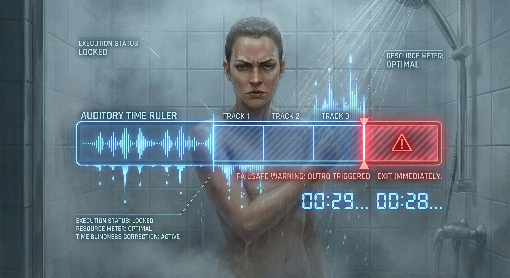

每天洗澡是一件再平常不過的事，但身為一個喜歡找樂子（又不想浪費時間）的人，我發現自己發展出了一個有點特別的習慣：我必須放音樂，才能好好洗澡。把看不見的時間，變成聽得到的音樂進度，這就是我的專屬「聽覺計時器」。

# 浴室裡消失的時間
浴室是個很容易讓人「時間消失」的魔法空間。沒有時鐘可以看，加上舒服的熱水和蒸氣，我們對時間流逝的感覺會變得很遲鈍。
洗澡的動作太習慣了，腦袋很容易不小心進入待機狀態，一發呆就洗太久。當完全只靠自己的感覺來判斷「嗯，我洗乾淨了」的時候，很容易浪費水費跟瓦斯費，後面的看劇或睡覺時間也全都被往後擠。
# 自己的洗澡節奏自己抓
為了解決這個不小心就會浪費水的問題，這套「音樂計時法」有一套我自己的小規則，讓生活更有效率：
- 戰鬥澡模式： 針對不需要洗頭的日子，挑選長度極短的播放清單，跟著節奏速戰速決。
- 全套洗淨模式： 遇到要洗頭、護髮的日子，就給自己多一點「扣打」，放寬歌單的額度。
- 趕走放空蟲： 持續推進的音樂能讓腦袋知道進度到哪裡了，避免洗到一半陷入無意識的發呆。
- 殘酷的下課鐘： 最後一首歌的尾奏，就是系統發出的超時警告。只要音樂一停，就是立刻關水離開浴室的時候。
把時間變成一首首喜歡的歌，不僅能控制洗澡時間不浪費水，還能順便聽聽音樂放鬆。
只有我這樣嗎？
每次洗完澡神清氣爽地走出浴室時，我偶爾會想：那些洗澡不放音樂的人，到底都是怎麼決定「嗯，我洗乾淨了，可以出去了」的？完全靠感覺，真的不會洗到忘記時間嗎？把洗澡當成遊戲破關一樣設定條件，或許聽起來有點搞笑，但這真的讓我的日常變得超有效率。洗澡一定要配音樂計時的……真的只有我這樣嗎？
本文為「BlogBlog 同樂會 - 2026 年 2 月」之投稿文章。
本月主題為「只有我這樣嗎？」。分享如何將日常高重複性流程轉化為有趣的聽覺計時系統。
本月主題為「只有我這樣嗎？」。分享如何將日常高重複性流程轉化為有趣的聽覺計時系統。